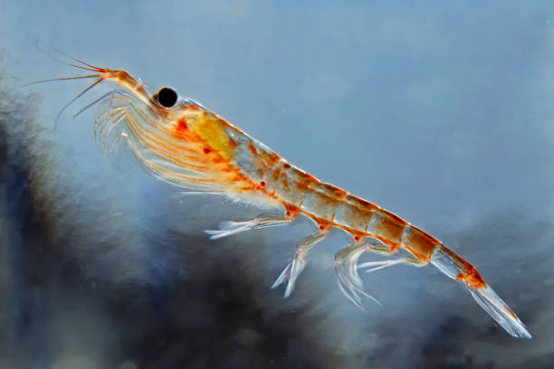

Los eufausiáceosn (Euphausiacea) son un orden de crustáceos malacostráceos conocidos genéricamente como kril. Pueden encontrarse en todos los océanos del mundo, se alimentan sobre todo de fitoplancton y son un elemento fundamental de la cadena trófica de los ecosistemas oceánicos. En el océano Antártico, una especie, el kril antártico (Euphausia superba), constituye una biomasa estimada de alrededor de 379 000 000 de toneladas, lo que la convierte en una de las especies con mayor biomasa del planeta, de la cual más de la mitad es consumida por ballenas barbadas, focas, pingüinos, calamares y peces cada año. La mayoría de las especies de eufausiáceos realizan grandes migraciones verticales diarias, lo que proporciona alimento a los depredadores cerca de la superficie por la noche y en aguas más profundas durante el día.
De comportamiento gregario, se agrupan en enormes cardúmenes que se extienden a lo largo de kilómetros con miles de individuos concentrados en un solo metro cúbico de agua, lo que los hace una especie idónea para su explotación comercial. Se pesca comercialmente en el océano Antártico y en las aguas en torno a Japón. La captura total asciende a entre 150 000 y 200 000 toneladas anuales, la mayor parte de la cual proveniente del mar del Scotia. La mayoría se utiliza en la acuicultura, para la confección de alimento para acuarios, como cebo en la pesca deportiva o en la industria farmacéutica. En Japón, Filipinas y Rusia también se usa para el consumo humano.
Su nombre común en español proviene del inglés krill y este a su vez del noruego krill (alevín, pez pequeño).
Se cree que el orden Euphausiacea es monofilético debido a que conserva varias características morfológicas únicas (autoapomorfia), como branquias filamentosas desnudas y toracópodos delgados, y por estudios moleculares.
Ha habido muchas propuestas sobre la ubicación del orden Euphausiacea. Desde la primera descripción de Thysanopode tricuspide realizada por Henri Milne-Edwards en 1830, la similitud de sus toracópodos birrámeos había llevado a los zoólogos a agrupar a los eufausiáceos y misidáceos (Mysidacea) en el orden Schizopoda, que fue dividido por Boas en 1883 en dos órdenes separados. En 1904 William Thomas Calman clasificó los misidáceos en el superorden Peracarida y los eufausiáceos en el superorden Eucarida, aunque hasta la década de 1930 se abogó por el orden Schizopoda. Posteriormente también se propuso que el orden Euphausiacea debería agruparse con Penaeidae (familia de langostinos) en Decapoda con base en sus similitudes de desarrollo, tal como lo consideraron Robert Gurney e Isabella Gordon. La razón de este debate es que el kril comparte algunas características morfológicas de los decápodos y otras de los misidáceos.
Los estudios moleculares no hay permitido su agrupación de manera inequívoca, posiblemente debido a la escasez de especies clave escasas como Bentheuphausia amblyops en Euphausiacea y Amphionides reynaudii en Eucarida. Un estudio apoya la monofilia de Eucarida (con el orden Mysida basal), otros agrupan Euphausiacea con Mysida (Schizopoda), mientras que otros agrupan Euphausiacea con Hoplocarida.
Ningún fósil existente puede asignarse inequívocamente a Euphausiacea. Se ha considerado que algunos taxones eumalacostráceos extintos podrían ser eufausiáceos, como Anthracophausia, Crangopsis -actualmente asignado a Aeschronectida (Hoplocarida)- o Palaeomysis. Todas las fechas de los procesos de especiación se estimaron mediante la técnica de reloj molecular, que ubicaron al último ancestro común de la familia de krils Euphausiidae (orden Euphausiacea menos Bentheuphausia amblyops) como que vivió en el Cretácico inferior hace unos 130 millones de años.